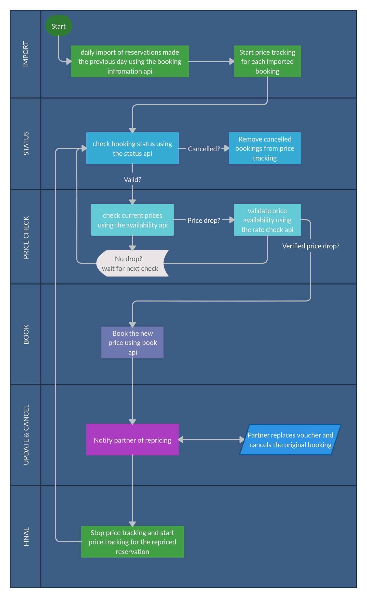

Overview
Abstract
This documentation defines the integration process with Pruvo's repricing service.
Service description
Pruvo developed an AI-Driven hotel price monitoring service that helps you increase your profitability by re-booking when the market price drops. The solution was developed while focusing on creating a simple to integrate solution which lowers the required development efforts from your end to the minimum.
The service consists of the following steps:
- Import: Automatic import of all your reservations into Pruvo's price monitoring service.
- Price Monitoring: Continues price monitoring of your reservations, using your own inventory and/or Pruov's inventory.
- Rebooking (Automatic / Semi-Automatic): Once Pruvo finds a lower price for the exact room, the re-booking can be made automatically by Pruvo or semi-automatically by allowing you to verify the proposed change on Pruvo's platform (once the change is approved by you, the re-booking takes place automatically).
- Back-office Booking Update: After re-booking the exact same room using Pruvo's platform, the only thing left is to update the original reservation with the new reservation data (It's important to allow a silent replacement so the end customer won't be aware of the changes that were made).
By completing the above steps, you can increase your profitability for already made reservations, by constantly looking for a better rate and replacing them with a better priced reservations.
Integration Process
Pruvo's solution is a SAAS solution that can be integrated with any platform.
In order to complete such an integration, Pruvo requires access to your API endpoints and documentation as well as special permissions to gain access to all hotel reservations.
Such permission will be used in order to allow Pruvo to import existing reservations, check status and monitor the market prices.
Most of the integration is performed on Pruvo's side by integrating to your existing api.
The ONLY requirement of integration on your end is extending your api capabilities to support the re-booking process.
Flow

Reservation Import
Example Request
curl "https://your.api.domain/bookings_query?from=21/01/2020&to=21/01/2020"
Pruvo will automatically import all the reservations from your system for price monitoring. This will be performed on a daily basis (configurable), by querying your api for all reservations that were made in the previous day.
Pruvo requires an endpoint that will allow us to get all the reservations in your system, filtered by creation date.
The endpoint should return all data related to each booking, including but not limited to:
- Status
- Docket
- Booker custom reference (if applicable)
- Net price and currency
- Creation date
- Arrival date
- Departure date
- Cancellation policy
- Internal hotel id
- Hotel customer info, as returned by the supplier
- (full) Room type and number of rooms
- Meal plan
- Guests information, including names, ages, gender and nationality
- Guests special request
Reservation Status Check
Example Request
curl "https://your.api.domain/booking?docket=<docket>"
In order to avoid price monitoring of cancelled/modified reservations, Pruvo requires an endpoint that will allow us to get the status of a specific reservation by it's docket
Reservation Price Monitoring
In order to perform price checks over your providers, Pruvo requires an access to your api, with your net rates. Pruvo can also monitor prices on it's own inventory and marketplace.
Reservation Re-booking
Once a better price is found, Pruvo will perform the book request using your api.
Reservation Booking Error Handling
Example Request
curl "https://your.api.domain/booking?custom_reference=<custom reference>"
Pruvo developed an error detection and resolution system which allows us to identify duplicate bookings and recuperate from failures. In order to be able to prevent errors and lower the fault rate to a minimum, Pruvo requires the ability to specify a custom reference in the book phase, which can later be used in the status api to get the status of a reservation reference.
Consider the following scenario:
- Pruvo performs a book request, whilst proving custom reference = FOO
- Before Pruvo gets a chance to get a response (with the new docket), something goes wrong (server crash, network issues, etc. on either side)
- Pruvo will retry the booking request. There are 2 scenarios here:
- The original reservation request didn't go though - Pruvo needs to call the book endpoint again
- The original reservation request went though and the reservation was made - Pruvo needs to get the booking details and continue without making the book request again
- In order to decide which scenario to take, Pruvo needs to understand if the previous book request went through.
Because Pruvo didn't get the chance to retrieve the docket, the only reference Pruvo has of the book request is the custom reference.
To achieve that, Pruvo needs to be able to obtain the status of a reservation using the custom reference.
Back Office Updates
Example Request
curl "https://your.api.domain/reprice?originalDocket=<original docket>&newDocket=<new docket>"
Once a repriced reservation is made, it is required to update the reservation information in your back office.
Pruvo will update you regarding the
with the new reservation data, and silently cancel the original reservation.
The agent who made the original reservation should not be aware of the change.
Pruvo will require a new endpoint, that we can call once the new reservation is confirmed, to let you know that a repricing has occurred so you can take care of the change.
Requirements Summary
Following is the full list of requirements that are needed on your side to complete the integration:
- Api credentials access with privileged authorization
- Reservation query endpoint with creation date filtered
- Reservation status api endpoint
- Custom booking reference input and query
- Api endpoint to handle re-priced reservations on your back office
Repricing Modes
Automatic
Once a better rate is found for a monitored reservation, Pruvo will automatically re-book and notify your back office on the made changes (using your back office update endpoint).
Semi Automatic
Once a better rate is found for a monitored reservation, Pruvo will notify the assigned agent by email and require their verification prior to the one click re-booking process.
Repricing Flow Example
Please find an example of the typical flow used by most of our customers (in case of special integration request, the current flow can be modified according to the desired scenario)
- An agent makes a reservation on your system
- Pruvo automatically imports that reservation
- Pruvo price monitoring starts
- Pruvo checks the status of the reservation to make sure it is still valid
- Pruvo checks the current price of the reservation using your api
- A better price is found - Pruvo validates the rate
- Pruvo makes a new reservation using your book api
- Pruvo notifies your back office on the change using the back office endpoint
- You change the reservation data with the newly crated reservation
- You silently cancel the original reservation
- You have the same exact reservation, with a lower price
Support
Please Send all support questions and issues to dev@pruvo.net